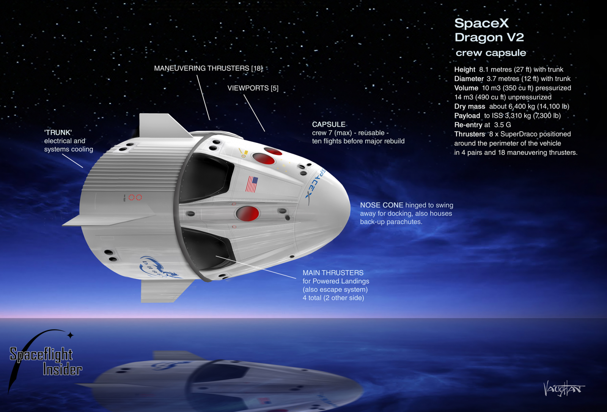

Dragon is a free-flying spacecraft designed to deliver both cargo and people to orbiting destinations. Dragon made history in 2012 when it became the first commercial spacecraft in history to deliver cargo to the International Space Station and safely return cargo to Earth, a feat previously achieved only by governments. It is the only spacecraft currently flying that is capable of returning significant amounts of cargo to Earth. Currently Dragon carries cargo to space, but it was designed from the beginning to carry humans. Under an agreement with NASA, SpaceX is now developing the refinements that will enable Dragon to fly crew. Dragon's first manned test flight is expected to take place as early as 2018.
SpaceX began developing the Dragon spacecraft in late 2004, making a public announcement in 2006 with a plan of entering service in 2009. Also in 2006, SpaceX won a contract to use the Dragon spacecraft for commercially supplied resupply services to the International Space Station for the American federal space agency, NASA.
During its maiden flight in December 2010, Dragon became the first commercially built and operated spacecraft to be recovered successfully from orbit. On 25 May 2012, a cargo variant of Dragon became the first commercial spacecraft to successfully rendezvous with and attach to the International Space Station (ISS). SpaceX is contracted to deliver cargo to the ISS under NASA's Commercial Resupply Servicesprogram, and Dragon began regular cargo flights in October 2012. With the Dragon spacecraft and the Orbital ATK Cygnus, NASA seeks to increase its partnerships with domestic commercial aviation and aeronautics industry.
On 3 June 2017, the CRS-11 capsule largely assembled from previously flown components from the CRS-4 mission in September 2014 was launched again for the first time, with the hull, structural elements, thrusters, harnesses, propellant tanks, plumbing and many of the avionics reused while the heat shield, batteries and components exposed to sea water upon splashdown for recovery were replaced.
| Launch Date | Customer | Launch Site | Vehicle |
|---|---|---|---|
| 9/7/2017 | U.S. AIR FORCE (OTV-5) | CAPE CANAVERAL | |
| 8/24/2017 | NATIONAL SPACE ORGANIZATION (TAIWAN) | VANDENBERG | FALCON 9 |
| 7/5/2017 | INTELSAT | CAPE CANAVERAL | FALCON 9 |
| 6/25/2017 | IRIDIUM (FLIGHT 2) | VANDENBERG | FALCON 9 |